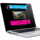
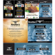

-

Web Development - Let us help you grow the business with online marketing strategies
Web development is the foundation for developing an online marketing strategy to build a website, where development is done in various stages, ranging from web design, social media marketing, E-commerce, up to SEO. Planning, design, analysis, implementation, promotion and innovation are the six essential elements of what we do in web development and create a successful pwebsite. How We Do It : Strategize & Define Plan & Produce Content & Refine Test & Assure Quality Deploy, Verify & Adjust Train & Track
-
Web Apps - Drive You Get Into Web Pages Fast and Easily With Finger Touch
Web Apps is an advanced application of modern times that use the internet and smart phone technology as its medium. The application is able to reach a lot of people with no limit to promote your business quickly. The function of web apps is not just about marketing, but it designed to facilitate the work of humans, ranging from business, personal up to pleasure. No need to be confused set the table for your guests in the restaurant, because web apps to help ease business owners manage reservations quickly. How We Do It : Strategy & Plan Concept & Proposal Develop Manage & Mantain
-

Printing Management - Grab The Market Through Printing Management
Printing management is one way of competition marketing strategy as fundamental in business. Marketing can be considered as the last tunnel to determine the fate of the company so many ways you can do and one of them is the printing management which includes, Banner, X-banner, Biz cards, Catalogue, Flyers, Stickers, other prints. Printing management is the physical result of a design with a mix of colors and images. The marketing strategy is not limited only through the website or the design but applied in a printout that also represent products or services offered by the company. How we do it : Design Assure quality for print Print proof Print
-
Design - Short Way To Deliver Your Business Through The Images & Colors
Design is creativity and innovation embodied in the form of images and colours as an illustration of what will be informed to the public. The concept design developed at this time is the idea of a marketing strategy in order to appeal to buyers of a product or service specific company. No need rambling to explain in the form of words because the design can represent all of the information products and services. We will show you how the power of design can influence your business marketing strategy.
-
Online Marketing – Time To Dominate The Web Market
Online marketing simple process that can improve the visibility of your website by developing through issues related to online strategies including SEO, Social Media Marketing, Newsletter and more. The development of the Internet is increasingly rampant, ranging from the students up to the parents to be a big opportunity for companies online marketing strategy stick to reach customers quickly and on target. Marketing strategies through social media allows you to build better communication with clients and increase confidence in your brand. Catch more customers with the web market domination. How we do it : Keyword Phrase Research & Recommendations Search Keyword Onsite Optimization Article Submission Link Building Social Media